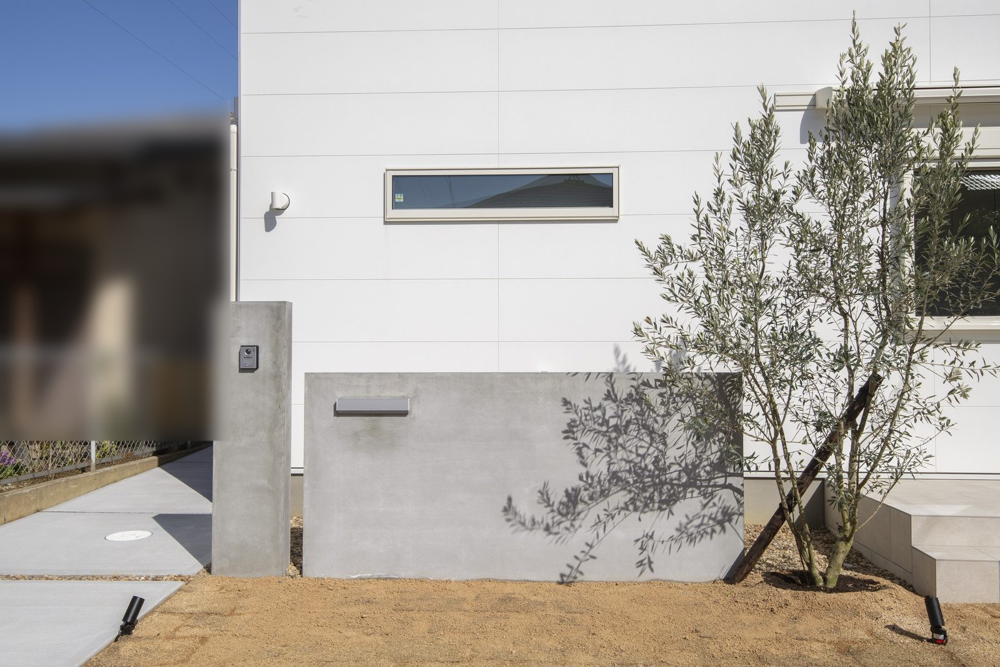
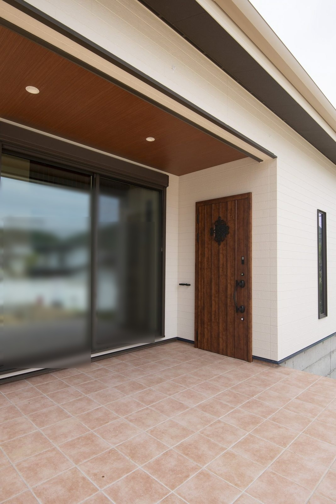

奈良で土地を探すときは、晴れた日だけでなく、雨の日の様子も見てみましょう。候補地の前を通ると、道路の水たまりや玄関までの歩き方を考えやすくなります。雨天か雨上がりに、道路から敷地を確認してください。

道路から玄関までを歩く
車から降りる場所を決め、傘と荷物を持って玄関へ向かうつもりで歩きます。道路と敷地に段差があると、雨の日は足元に気を取られます。子どもと一緒に歩くなら、車が通る場所と歩く場所が重ならないかも見てください。

水が集まる場所を写真に残す
道路の低い所や側溝の周り、隣地との境に水が集まっていないかを見ます。写真には水たまりだけでなく、道路や敷地の向きが分かる景色も入れておくと、設計の打合せで説明しやすくなります。私有地には無断で入らず、道路から確認します。
土地を決める前に、排水先を聞く
水が引いた跡を見つけたら、不動産会社や設計担当に敷地の高さと排水先を聞いてください。駐車場につける勾配や玄関までの段差は、外構費にも関わります。見学時の写真と敷地資料をそろえて、建物と外構を一緒に相談しましょう。
関連記事 土地を買う前にハザードマップを確認する
よくある質問
晴れの日にしか見学できないときは？
道路や敷地の高低差を写真に残し、雨天時の排水について不動産会社や設計担当に確認してください。

この記事を書いた人：やすろー
株式会社シバ・サンホーム 専務／資金計画・土地探しの窓口
奈良の工務店シバサンホームで、
土地さがし・資金計画・打合せの窓口をしています。
モットーはスピード・誠実さ・楽しさ。